Test Design Tactics
Test design tactics (Test Design Tactics – TDT) represent the systematic and methodological level of test engineering that translates a high-level test strategy (for example, risk-based testing – Risk-Based Testing) into specific, measurable, and repeatable procedures for creating test cases.
From the perspective of software architecture and quality, a fundamental principle applies: automating poorly designed or ineffective tests is a waste of time and resources. The test design process itself serves as one of the most effective forms of defect prevention (verification of the specification and architecture before the code is even executed). TDT define ways of reducing the system's infinite input and state space to a finite, optimal set of test scenarios that provide maximum defect coverage at minimum cost.
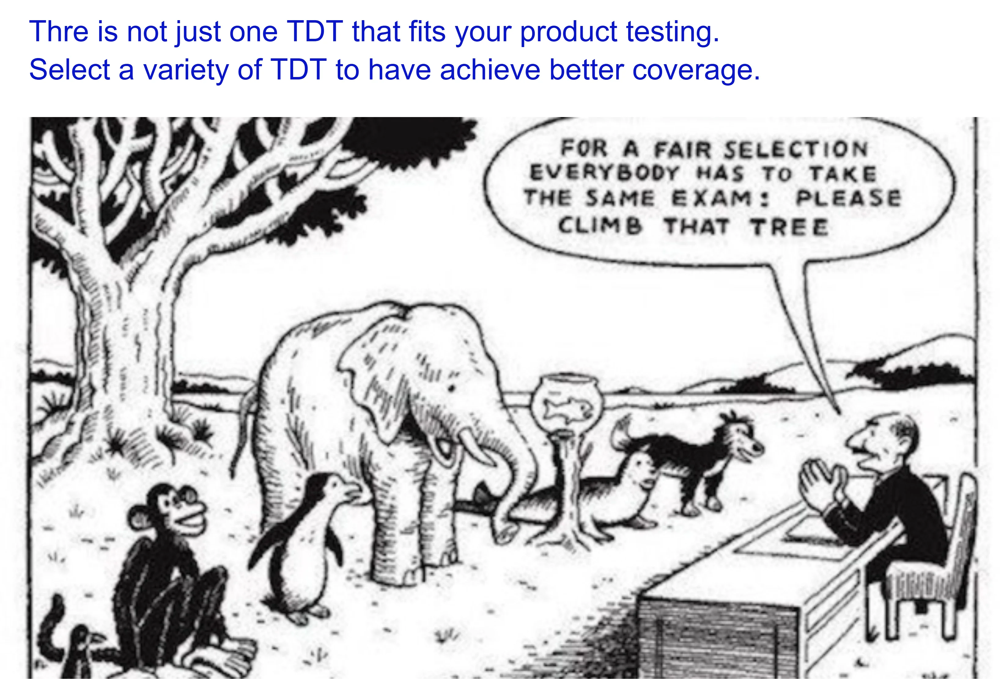
#
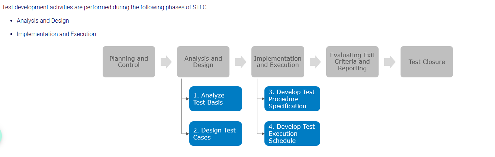
#Definitions and Basic Concepts
#1. Test Design Tactics (TDT) / Test Design Tactics
- Definition: Systematic methods, techniques, and rules used to derive input data, initial states, step sequences, and expected results for test cases from the test basis (requirements, architecture, models, code). (Also described in the ISO/IEC/IEEE 29119-4 standard).
- Significance in architecture: The architecture must provide a clear, unambiguous, and formalized model of system behavior (for example, state diagrams, interfaces) that serves as input for TDT. TDT validate the architecture for completeness and consistency.
- Significance in testing: Ensure objectivity, repeatability, traceability (traceability), and test sustainability, and eliminate reliance on intuition alone.
- Typical mistake / misunderstanding: Confusing test design tactics (TDT) with test strategy (an approach at the project/organizational level) or with test execution (test execution).
- Examination discussion: How do TDT connect risk assessment (RBT) with specific coverage at the unit (Unit) and integration (Integration) levels?
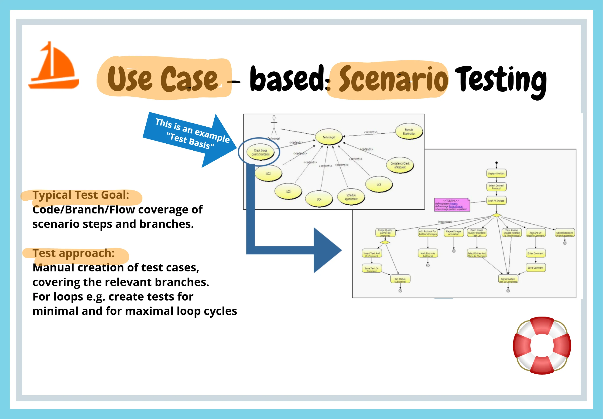
#2. Test Effectiveness (Testing Effectiveness)
- Definition: A measure of the ability of testing activities and techniques to detect existing defects in a system and confirm that the software meets specified requirements and exhibits correct behavior. It usually expresses the ratio of defects found to the total number of defects present in the product (for example, Defect Detection Percentage / Defect Removal Efficiency).
- Significance in architecture: Shows how well the test strategy and the selected test levels (unit, component, integration) uncover architectural risks, interface violations, and unintended interactions between subsystems. High effectiveness is directly dependent on the testability of the architecture itself (separation of responsibilities, component decoupling).
- Significance in testing: Represents a key success metric for the entire testing process – it answers the question "Are we doing the right tests?". Unlike a mere code coverage percentage, it measures the actual ability of tests to prevent critical defects from escaping into the production environment.
- Typical mistake or misunderstanding: Confusing effectiveness (effectiveness – doing the right things / detecting defects) with efficiency/economy (efficiency – doing things with minimal consumption of time and resources), or measuring effectiveness purely by the number of test cases executed, regardless of whether they can actually find relevant defects.
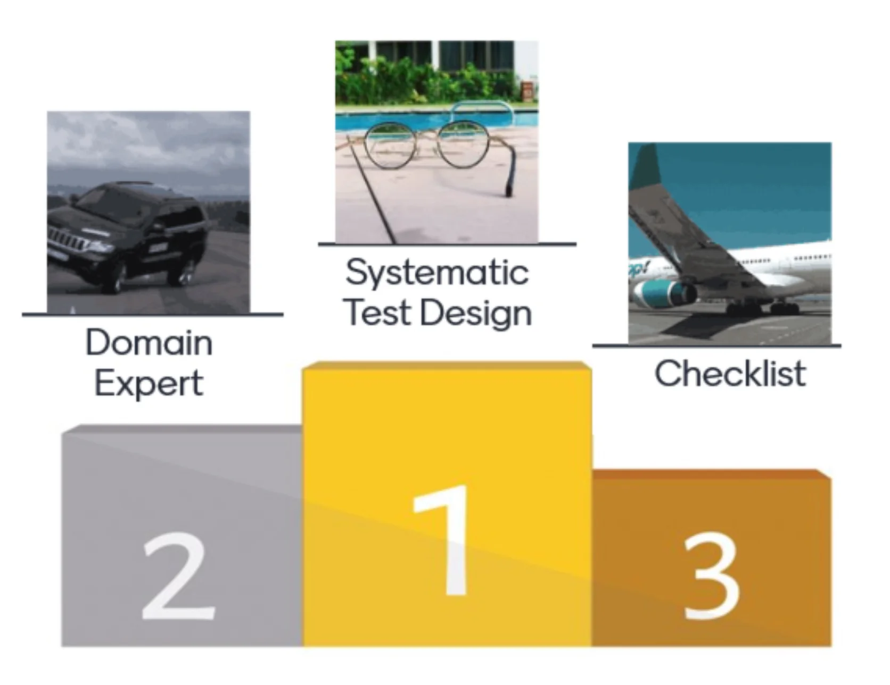
#3. Equivalence Partitioning (Equivalence Partitioning – EP / TD3)
- Definition: A black-box technique (black-box) that divides the input and output domains into equivalence classes (valid and invalid) that the system is assumed to treat in the same way.
- Significance in architecture: Defines domain boundaries and data types in architectural interfaces (APIs, data structures).
- Significance in testing: Dramatically reduces the number of test cases by selecting a representative from each class instead of testing exhaustively.
- Typical misinterpretation: Overlooking invalid classes (invalid equivalence classes) or incorrectly assuming equivalent behavior for data that are processed non-uniformly.
- Example (Safety/Embedded): In an automotive electronic control unit (ECU), the measurement range of a rotational speed sensor is specified as RPM. Valid class: \(0 \le n \le 8000\). Invalid classes: \(n < 0\) (undervoltage/sensor fault) and \(n > 8000\) (over-speed). Designated TD3 in the ISO 26262 standard.
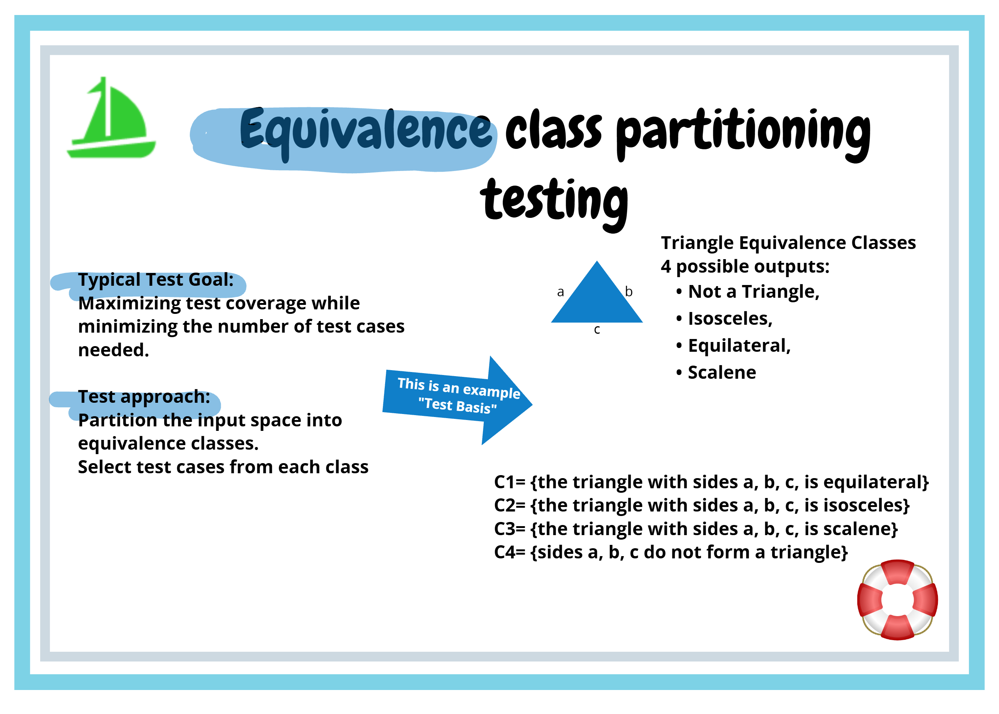
#3. Boundary Value Analysis (Boundary Value Analysis – BVA / TD4)
- Definition: An extension of equivalence partitioning focused on the boundaries between classes. Values directly on the boundary and in its immediate vicinity are tested (\(B\), \(B - \Delta\), \(B + \Delta\)).
- Significance in architecture: Determines the resilience of architectural components to stack overflows, data type ranges (for example, uint8 vs. uint16), and time limits. (General addition)
- Significance in testing: Reveals the most common developer defects of the "off-by-one" type (errors in the \(<\), \(\le\), \(>\), \(\ge\) operators).
- Typical mistake: Testing only the valid side of the boundary and omitting the immediately adjacent invalid value (\(B + \Delta\)).
- Example (Safety/Embedded): In ISO 26262 (TD4), for a temperature limit \(= 105.0^\circ\text{C}\) with a step of \(\Delta = 0.1^\circ\text{C}\), the values \(104.9^\circ\text{C}\), \(105.0^\circ\text{C}\), and \(105.1^\circ\text{C}\) are tested.
#4. Decision Tables (Decision Table Testing)
- Definition: A technique for capturing complex combinatorial logic and industrial/business rules, where different combinations of input conditions lead to different actions.
- Significance in architecture: Helps the architect uncover missing, incomplete, or contradictory requirements in the system logic before development begins.
- Significance in testing: Guarantees complete coverage of all combinatorial branches and allows infeasible or redundant rule columns to be collapsed (reduced).
- Typical mistake: Omitting invalid combinations or undefined action states.
#5. State Transition Testing (State Transition Testing)
- Definition: A test design technique based on a state machine (Finite State Machine – FSM), testing states, transitions, events, and system responses.
- Significance in architecture: Directly verifies the system's dynamic architecture and the life cycle of components (for example, Init, Ready, Running, Fault, Emergency Stop).
- Significance in testing: Measures state coverage (0-switch / All States), transition coverage (1-switch / All Transitions), and invalid transitions.
- Typical mistake: Testing only the "happy path" (happy path) and ignoring invalid events in a given state (for example, a start request in the Fault state).
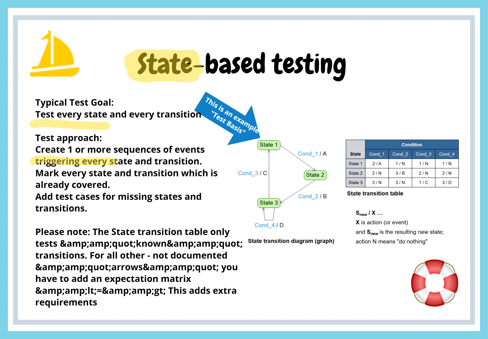
#6. Structural Tactic (White-box Coverage: C0, C1, C2/C3, MC/DC)
- Definition: Designing tests based on the internal structure of the code in order to achieve a defined level of control flow coverage (statements – C0, branches – C1, conditions – C2/C3, modified condition/decision coverage – MC/DC).
- Significance in architecture: Requires low module complexity (cyclomatic complexity) and high modularity to make all code branches reachable.
- Significance in testing: Ensures that no dead code (dead code) or untested logical paths remain in the code. In safety-critical systems (ASIL D), for example, MC/DC is strictly required by the standard.
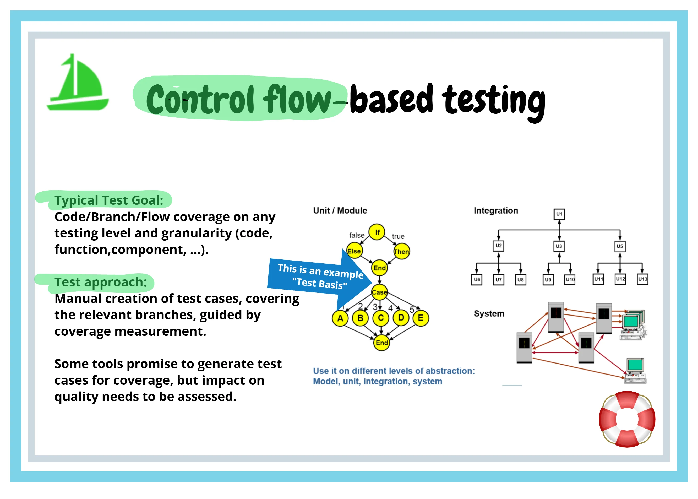
#7. Experience-Based and Defect-Based Tactics (Error Guessing / TD5, Defect Taxonomies)
- Definition: Reactive and supplementary test derivation techniques based on the tester's/architect's previous experience, knowledge of typical defect patterns, and safety analyses (FMEA/FTA).
- Significance in architecture: The architect uses a register of historical failures to adjust architectural tactics (for example, redundant mechanisms, defensive programming).
- Significance in testing: Supplements systematic specification-based techniques and reveals unanticipated boundary conditions and undocumented behavior.
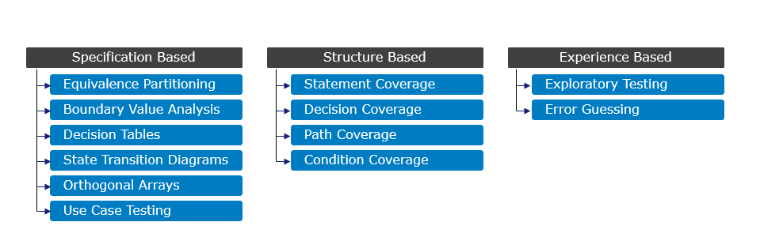
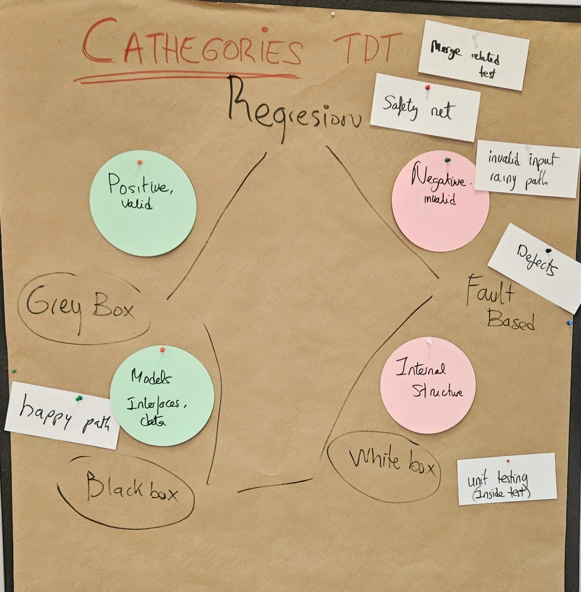
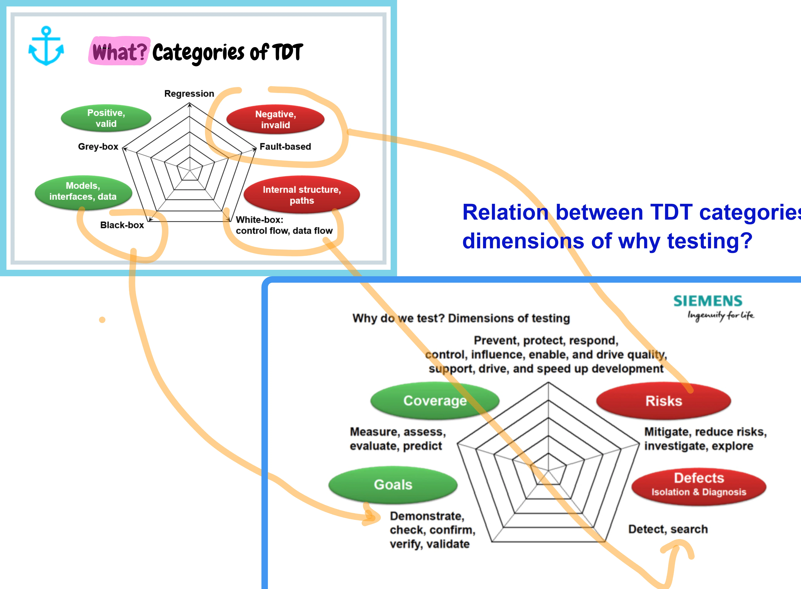
#Common Mistakes and Anti-Patterns
#1. Mistakes in Architecture: Insufficient Controllability and Observability (Low Controllability & Observability)
- Why it is a problem: If the architecture does not provide control points (Control Points – for example, interfaces for fault injection) and observation points (Observation Points – for example, internal state logging, measurement interfaces), advanced TDT (such as BVA on internal variables or Fault Injection) cannot be applied at all.
- How it manifests itself: Tests require complex state manipulation (database hacks, memory manipulation), and they are unstable (flaky) and slow.
- How to prevent it: Apply Design for Testability (DFT) from the very beginning of architectural design (Dependency Injection, testing interfaces, BIST – Built-in self-test).
#2. Mistakes in Requirements: Incomplete Specifications of Boundaries and Transitions
- Why it is a problem: TDT require a precise test basis (Test Basis). If the requirements do not state exact limits, step sizes, or actions for invalid inputs, test design breaks down into guessing the expected result (Test Oracle).
- How it manifests itself: Disagreements between developers and testers, untested behavior in invalid states, and integration delays.
- How to prevent it: Use TDT (for example, creating decision tables and FSMs) as a methodology for verifying requirements before coding.
#3. Mistakes in Test Strategy: Blind Automation of Bad Tests
- Why it is a problem: The team invests considerable effort in automating scripts that were designed ad-hoc without using systematic test design tactics.
- How it manifests itself: A high code coverage percentage (for example, C0) but a very low ability to detect actual defects (low effectiveness), and high script maintenance costs.
- How to prevent it: Clearly separate the test design phase (when deciding what and how to test using TDT) from the automation and execution phase.
#4. Mistakes in Automation: The Data-Driven Testing (DDT) Anti-Pattern without a Clear Purpose
- Why it is a problem: Using Data-Driven Testing as an excuse for executing hundreds of input data combinations at the system test level without prior equivalence analysis.
- How it manifests itself: Huge, unwieldy data tables, redundant testing of the same logic, extremely long test execution times, and an inability to determine which hypothesis a given row actually verifies.
- How to prevent it: Apply equivalence classes and BVA at the unit/component test level; retain only orthogonal and representative samples in DDT.
#5. Mistakes in Interpreting Testability: "Testing Only at the End" (Lack of Shift-Left)
- Why it is a problem: Testability is understood merely as the testers' obligation to create scripts after development is complete.
- How it manifests itself: Late discovery of architectural defects, when correcting them is orders of magnitude more expensive.
- How to prevent it: Apply the Shift-Left approach and TDD/BDD – test design serves as the specification of the architectural design.
#6. Mistakes in Communication: Separate Development and Testing
- Why it is a problem: Architects and developers do not know how to use the language of testing tactics (EP, BVA, C1, MC/DC), while testers do not understand the internal architecture.
- How it manifests itself: Testers test the system as a completely opaque black box even where knowledge of the architecture (a Grey-box approach) would significantly speed up tests and make them more effective.
- How to prevent it: Establish a community of practice (Community of Practice), and use tactic overview models (for example, Test Design Methods on One Page) as a common communication framework.
#Examination Questions
#1. Basic Questions
Question: What is the fundamental difference between equivalence partitioning (EP) and boundary value analysis (BVA)?
- What the answer should include: An explanation that EP divides the domain into classes with the same assumed behavior and selects one representative, whereas BVA focuses on critical points at the edges of these classes and selects values directly on the boundary and in its immediate vicinity (\(B\), \(B\pm\Delta\)).
Question: Why is it insufficient to rely solely on statement coverage (C0 / Statement Coverage) when designing tests?
- What the answer should include: C0 verifies only that the code has been executed, but ignores hidden branches (for example, missing
elsebranches), compound conditions, and invalid state transitions. C1, C2, or MC/DC provide a significantly stronger guarantee.
- What the answer should include: C0 verifies only that the code has been executed, but ignores hidden branches (for example, missing
#2. Intermediate Questions
Question: How does an analytical risk-based test strategy (Risk-Based Testing) relate to the choice of test design tactics (TDT)?
- What the answer should include: The level of risk (probability \(\times\) impact) determines the intensity and depth of testing tactics. Basic EP is sufficient for low risk; for high risk or critical modules (for example, according to ASIL in ISO 26262), it is necessary to combine EP, BVA, decision tables, and strict white-box coverage (C1 / MC/DC).
Question: How does a decision table (Decision Table) help an architect review the specification?
- What the answer should include: Constructing a decision table reveals undefined combinations of conditions (gaps in specification), contradictory rules, and duplicates. It therefore verifies complex logic before the first line of code is written.
#3. Advanced Questions
Question: Which architectural properties (Design Tactics) directly enable the application of advanced Test Design Tactics at the integration and component levels?
- What the answer should include: Architectural tactics for testability: high observability (Observability – state interfaces, logging, metrics), high controllability (Controllability – Dependency Injection, stimulation interfaces), and loose coupling (Loose Coupling). Without them, components cannot be isolated, nor can precise BVA or Fault Injection be performed.
Question: Explain the difference in the use of state testing (State Transition Testing) with 0-switch vs. 1-switch coverage.
- What the answer should include: 0-switch guarantees visiting every valid transition between two states (\(S_i \to S_j\)). 1-switch covers sequences of two consecutive transitions (\(S_i \to S_j \to S_k\)), which is necessary to reveal defects in state memory or incorrect resource cleanup. (Supplemented with context from Advanced Test Analyst).
#4. Questions about Practical Experience
- Question: How should you proceed in a project where requirements are incomplete or change rapidly, and formalized test design (spec-based TDT) fails?
- What the answer should include: Combine a lighter specification with exploratory testing (Exploratory Testing) and experience-based tactics (Error Guessing / Defect Taxonomies). Use rapid feedback loops (TDD/BDD) and maintain living test templates.
#5. Questions about Trade-Off Decisions
- Question: How can the conflicting requirement for 100% test coverage be reconciled with a limited budget and project schedule?
- What the answer should include: An argument that exhaustive testing is impossible. The solution is risk prioritization (RBT) and choosing breadth (breadth) over excessive depth (depth) in lower-risk areas. Using EP and Pairwise testing to reduce the combinatorial explosion while maintaining a high defect detection rate.
#Model Examination Answer
The topic of test design tactics (Test Design Tactics – TDT) represents the very core of effective and efficient test engineering. If I were to define TDT from a software architect's perspective, they are a systematic set of methods and procedures that transform the intent of a test strategy – for example, risk-driven testing – into a specific, measurable, and repeatable set of test cases.
Why is this topic critically important for architecture? In practice, we often encounter the idea that quality is ensured by writing code and subsequently covering it with automated scripts. However, this is an anti-pattern. As Boris Beizer aptly noted, the very act of designing tests is one of the most effective tools for defect prevention. Where systematic test design is unavailable, we risk automating bad or redundant tests, which represents an enormous waste of time and money.
In classifying tactics, we primarily use black-box (specification-based) and white-box (structure-based) methods. For black-box methods, the fundamental building block is equivalence partitioning (Equivalence Partitioning). We divide the input and state space into classes with the same assumed behavior and select one representative from each. We immediately supplement this technique with boundary value analysis (Boundary Value Analysis) because we know that developers make the most mistakes precisely at condition boundaries – we therefore test the boundary \(B\) itself and its immediate vicinity \(B \pm \Delta\). For complex rule logic, we use decision tables, and for the system's dynamic behavior, state transition testing (FSM).
The relationship with architecture is bidirectional. For us to be able to use these tactics, the architecture must apply Design for Testability (DFT). This means that the architecture must ensure two key properties: controllability (Controllability) – the ability to set the required component state and inject inputs – and observability (Observability) – the ability to capture internal state and outputs. Without Dependency Injection or suitable testing interfaces, test design becomes a nightmare.
Let us consider a practical example from embedded or safety-related software, such as controlling a car's brake assist system (ASIL D). When specifying the pedal input, we use a range from \(0\) to \(100,%\). Using equivalence classes, we define the valid class \(\) and invalid classes below \(0,%\) (broken wire) and above \(100,%\) (short circuit). Using boundary value analysis, we determine the test points: \(-0.1,%\), \(0.0,%\), \(0.1,%\), \(99.9,%\), \(100.0,%\), and \(100.1,%\). From an architectural perspective, we must test the module in isolation, which requires mocking the CAN bus and simulating the analog-to-digital converter (ADC). At the code level, the standard then requires achieving 100% MC/DC coverage.
The main trade-off we must address as architects is the balance between breadth and depth (breadth vs. depth). We cannot test everything exhaustively. Therefore, based on risk analysis (Risk-Based Testing), we apply strict combinatorial tactics and MC/DC to critical safety modules, while for less critical components, basic equivalence classes or experience-based testing (Error Guessing / Exploratory Testing) are sufficient.
In conclusion: Test design tactics are not merely part of a tester's job. They are architectural tools for validating requirements, simplifying internal design, and guaranteeing the required software quality."**
#11. Short Version for Quick Revision (Cheat Sheet)
#5 Main Points
- Test design is defect prevention – it verifies requirements and architecture before coding.
- Automating ineffective tests is wasteful – TDT ensure optimal coverage with a minimal set of tests.
- The basis of black-box testing – Equivalence classes (EP) reduce the space; Boundary values (BVA) catch defects at the edges.
- An architectural prerequisite – Testability requires highly controllable and observable components (Design for Testability).
- Risk-driven – The choice and intensity of tactics depend on risk assessment (RBT) and normative requirements (for example, ISO 26262 / ASIL).
#5 Key Concepts
- Equivalence Partitioning (EP / TD3) – Dividing inputs/outputs into representative valid and invalid classes.
- Boundary Value Analysis (BVA / TD4) – Testing class boundaries (\(B\), \(B\pm\Delta\)) to catch off-by-one errors.
- Decision Table Testing – A matrix of conditions and actions for testing complex combinatorial logic.
- State Transition Testing – Testing state machines (states, transitions, events, 0/1-switch).
- MC/DC (Modified Condition/Decision Coverage) – Strict structural coverage of code conditions required in critical systems.
#3 Most Common Mistakes
- Blind automation of poorly thought-out ad-hoc scenarios without applying systematic TDT.
- Ignoring invalid equivalence classes and boundary values on the invalid side.
- Assuming that testability is only a testing concern after development (neglecting Design for Testability upfront).
#1 Concise Model Sentence for the Examination
"Test design tactics transform a risk-driven strategy into a mathematically and logically justified set of test cases, and their successful application directly requires architectural design for testability."
#Learning outcome (Relationship to LOPO)
According to the approved Learning and Practice Outcomes (LOPO) framework, the output and knowledge in the area of TDT must reflect the following objectives:
- Systematic Test Design (Workshop 2): Ensuring the systematic application of various test design techniques (EP, BVA, Decision Tables, FSM) to achieve effective and purposeful coverage.
- Design for Testability (Workshop 1): The ability of architects to implement the quality of "testability" at multiple architectural levels so that both integration and non-resonant/non-functional requirements (NFR) can be validated.
- Internal Quality (Workshop 2): Introducing and monitoring the internal quality of code and design to detect defects early and prevent the accumulation of technical debt.
- Testing Pyramid / Test Trophy: The ability to justify the allocation of testing effort and the choice of tactics across test levels (Unit, Integration, System/Validation).
#Summary in a Single Table
| Area | What is important | Relationship to architecture | Relationship to testing | Typical examination question |
|---|---|---|---|---|
| Equivalence classes (EP / TD3) | Divide the space into valid and invalid classes with the same behavior. | Defines type ranges and data domains for interfaces and APIs. | Reduces an infinite input space to representative samples. | How can invalid classes be identified for compound data types? |
| Boundary values (BVA / TD4) | Test points \(B\) and \(B \pm \Delta\) at the edges of equivalence classes. | Reveals overflow risks and boundary state transitions in components. | Detects the most common "off-by-one" programming errors. | Why is BVA more effective than selecting values randomly from a class? |
| Decision tables | Cover all valid and invalid combinations of input conditions and actions. | Reveals incomplete, contradictory, and missing requirements in the logic. | Provides a deterministic matrix for statement coverage of combinations. | How can a decision table be collapsed (reduced) without losing coverage? |
| State testing (FSM) | Cover states, transitions (0-switch), and transition sequences (1-switch). | Verifies the dynamic architecture and component life cycle. | Determines whether transitions are correct and invalid events are handled within states. | What is the difference between 0-switch and 1-switch coverage of a state machine? |
| White-box coverage (C0/C1/MC-DC) | Achieving a defined level of code coverage according to system criticality. | Requires low cyclomatic complexity and modular code design. | Measures the structural completeness of tests and reveals impossible/dead branches. | Why does ISO 26262 require MC/DC coverage for ASIL D, and why is C1 insufficient? |
| Design for Testability (DFT) | System design focused on controllability and observability. | Architectural bottleneck: DI, testing interfaces, BIST, degree of coupling. | Ensures fast, stable, isolatable, and reliable execution of TDT. | Which architectural tactics improve observability of the internal state? |
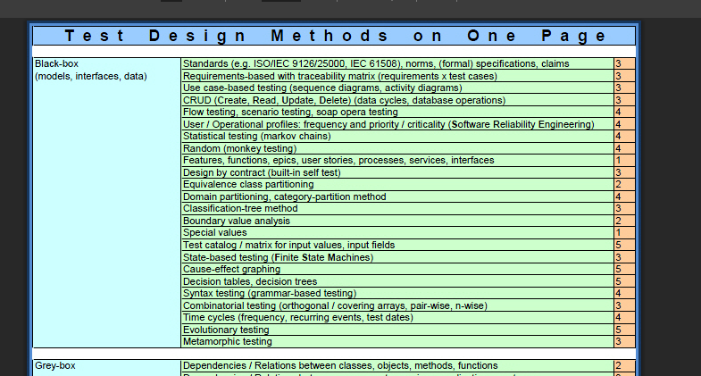